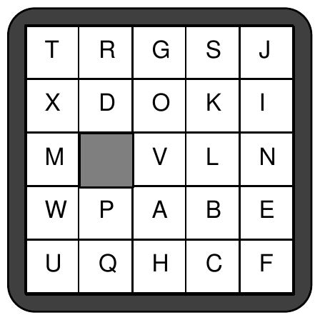
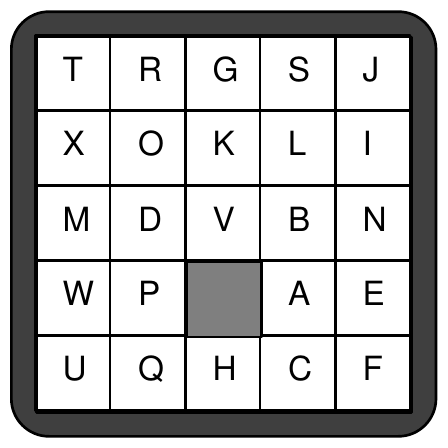

1993 ACM International Collegiate Programming Contest Finals · Problem F
A children’s puzzle that was popular 30 years ago consisted of a 5×5 frame which contained 24 small squares of equal size. A unique letter of the alphabet was printed on each small square. Since there were only 24 squares within the frame, the frame also contained an empty position which was the same size as a small square. A square could be moved into that empty position if it were immediately to the right, to the left, above, or below the empty position. The object of the puzzle was to slide squares into the empty position so that the frame displayed the letters in alphabetical order.
The illustration below represents a puzzle in its original configuration and in its configuration after the following sequence of 6 moves:


Write a program to display resulting frames given their initial configurations and sequences of moves.
Input for your program consists of several puzzles. Each is described by its initial configuration and the sequence of moves on the puzzle. The first 5 lines of each puzzle description are the starting configuration. Subsequent lines give the sequence of moves.
The first line of the frame display corresponds to the top line of squares in the puzzle. The other lines follow in order. The empty position in a frame is indicated by a blank. Each display line contains exactly 5 characters, beginning with the character on the leftmost square (or a blank if the leftmost square is actually the empty frame position). The display lines will correspond to a legitimate puzzle.
The sequence of moves is represented by a sequence of As, Bs, Rs, and Ls to denote which square moves into the empty position. A denotes that the square above the empty position moves; B denotes that the square below the empty position moves; L denotes that the square to the left of the empty position moves; R denotes that the square to the right of the empty position moves. It is possible that there is an illegal move, even when it is represented by one of the 4 move characters. If an illegal move occurs, the puzzle is considered to have no final configuration. This sequence of moves may be spread over several lines, but it always ends in the digit 0. The end of data is denoted by the character Z.
Output for each puzzle begins with an appropriately labeled number (Puzzle #1, Puzzle #2, etc.). If the puzzle has no final configuration, then a message to that effect should follow. Otherwise that final configuration should be displayed.
Format each line for a final configuration so that there is a single blank character between two adjacent letters. Treat the empty square the same as a letter. For example, if the blank is an interior position, then it will appear as a sequence of 3 blanks—one to separate it from the square to the left, one for the empty position itself, and one to separate it from the square to the right.
Separate output from different puzzle records by at least one blank line.
Sample input and the corresponding correct output are shown below. The first record corresponds to the puzzle illustrated on the other side of this page.
TRGSJ XDOKI M VLN WPABE UQHCF ARRBBL0 ABCDE FGHIJ KLMNO PQRS TUVWX AAA LLLL0 ABCDE FGHIJ KLMNO PQRS TUVWX AAAAABBRRRLL0 Z
Puzzle #1:
T R G S J
X O K L I
M D V B N
W P A E
U Q H C F
Puzzle #2:
A B C D
F G H I E
K L M N J
P Q R S O
T U V W X
Puzzle #3:
This puzzle has no final configuration.